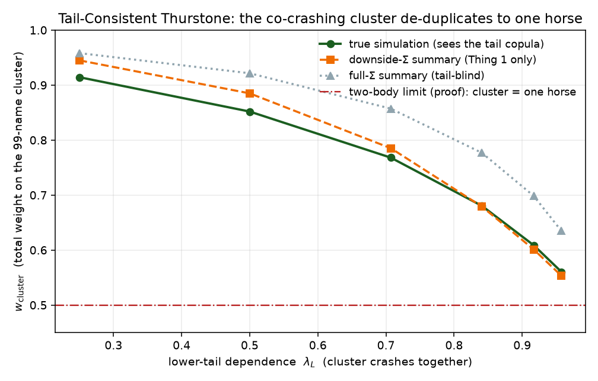

Thurstone Portfolios: Allocation as Winning Probability
We develop Thurstone portfolios, a
robust, inversion-free long-only allocation scheme in which a portfolio
is the vector of winning probabilities of a race among assets. The race
is a Thurstonian model of choice; reading allocation this way sets it
against the passive industry’s capitalization weighting, which silently
invokes Luce’s choice axiom and draws only superficial support from the
Capital Asset Pricing Model. Four advantages follow. The weights are
sensitive to tail dependence, the propensity of assets to fall
together, which a covariance cannot encode; they resolve the duplication
(red-bus/blue-bus) paradox of any Luce-type rule, so that perfectly
correlated holdings share a single position; they vary smoothly with
their inputs, which bounds turnover and supports online rebalancing at
scale; and they exhibit capitalization weighting as the degenerate,
correlation-blind member of the same family. The construction is
feasible on the simplex without optimization, admits an arbitrary
performance simulation so that dependence beyond second moments can be
matched, and solves an implied mean–(convex-regularizer) program whose
penalty the simulation fixes. We prove the supporting properties
(feasibility, index reproduction, redundancy and tail consistency, the
implied objective, and a Lipschitz turnover bound) and implement the
method in the allocation package, built on
thurstone.
1 Introduction
We develop Thurstone portfolios, a long-only allocation scheme whose weights are the winning probabilities of a race among assets. The race has a second reading as a Thurstone Class V model of choice, which we juxtapose against the passive investment industry’s capitalization weighting and its implicit appeal to Luce’s choice axiom. That ubiquitous Lucian habit is only superficially supported by the Capital Asset Pricing Model (CAPM): what the CAPM endorses is the efficiency of the whole-universe market portfolio, a non-Lucian object no investor on a restricted universe actually holds (2.1).
We read allocation as that choice and take the winning probabilities as weights. Being non-Lucian, the construction is free of the duplication paradox that afflicts capitalization weighting (4). Its sharper advantages, though, are over the other allocators that avoid both optimization and matrix inversion—risk parity and the Schur-complementary construction, of which hierarchical risk parity is a special case—on three counts.
It is robust in the same way they are: it samples from a correlation rather than inverting one, so it stays well posed when \(\Sigma\) is singular or rank-deficient (2.4).
It turns over less than they do. Its weights are locally Lipschitz in the correlation, and a common-seed transport moves them only as the correlation moves, where Schur and HRP re-seriate or re-cluster each period; on Dow constituents its turnover runs several times lower at comparable risk-adjusted return (2, 8).
And, unlike any covariance functional, it admits tail dependence: a race driven by a tail-dependent simulation responds to lower-tail dependence the covariance cannot encode, so a cluster that crashes together de-duplicates to a single position (6).
These rest on properties established below: feasibility on the simplex with neither optimization nor inversion, exact reproduction of the benchmark when the reference and target laws agree, redundancy consistency and diversification monotonicity, tail consistency, an implied mean–(convex-regularizer) objective \(w = \nabla G_S(\theta)\) for any performance law \(S\), and a Lipschitz bound on turnover (Sections 6 and 7).
2 Background
2.1 Why the CAPM does not rescue naive indexing
The passive industry defends capitalization weighting by appeal to the CAPM. We grant the CAPM in full; the point is that its support for the practice is superficial. What the model endorses is the efficiency of the whole-universe market portfolio, a non-Lucian object the indexer never holds, and that endorsement does not transfer to the restricted universes where weighting decisions are made.
2.1.0.1 What the CAPM says.
Under the CAPM every investor is a mean–variance optimizer who agrees on the expected returns \(\mu\) and on the same covariance \(\Sigma\). Two-fund separation then has each investor hold the risk-free asset together with the same tangency portfolio, proportional to \(\Sigma^{-1}(\mu - r\mathbf{1})\). Since all investors hold the identical risky portfolio, market clearing forces it to equal the supply, the capitalization-weighted market, so \(\mathrm{cap} \propto \Sigma^{-1}(\mu - r\mathbf{1})\) and the market portfolio is efficient.
Capitalization weighting is optimal precisely because the covariance is shared and the universe is the whole world: it is the one portfolio on which all investors, reasoning from a single \(\Sigma\) over all assets, agree.1
2.1.0.2 Choice and efficiency.
Given these imperfections it is natural to ask whether allocation admits other, less normative models. The choice literature offers a rich menu, and in particular two accounts long viewed as rivals in the heyday of psychometric choice theory: Thurstone’s law of comparative judgment (Thurstone 1927) and the Lucian (logit) model. They part on whether the relative standing of two options may depend on the rest of the field, and that fault line is the one that matters here.
Write \(w_i(\mathcal U)\) for the weight a rule assigns to asset \(i\) within a universe \(\mathcal U\). Capitalization weighting sets \(w_i(\mathcal U) = \mathrm{cap}_i / \sum_{j\in\mathcal U}\mathrm{cap}_j\), so the ratio \(w_i(\mathcal U)/w_j(\mathcal U) = \mathrm{cap}_i/\mathrm{cap}_j\) does not depend on \(\mathcal U\). That is Luce’s choice axiom (Luce 1959), independence of irrelevant alternatives, and we call such a rule Lucian. Efficiency has no such invariance: the tangency weights on \(\mathcal U\) are \(w^{*}(\mathcal U) \propto \Sigma_{\mathcal U}^{-1}(\mu_{\mathcal U} - r\mathbf{1})\), whose ratios turn on the entire inverse covariance \(\Sigma_{\mathcal U}^{-1}\) and move when an asset enters or leaves \(\mathcal U\) (unless \(\Sigma_{\mathcal U}\) is diagonal). The CAPM makes the two objects coincide at a single universe, the whole world, where clearing fixes \(\mathrm{cap}\propto\Sigma^{-1}(\mu-r\mathbf 1)\).
Proposition 1 (Lucian weighting is inconsistent under restriction). Capitalization weighting is the Lucian rule with values \(\mathrm{cap}_i\). If returns are correlated (non-diagonal \(\Sigma\)), then generically a Lucian rule coincides with mean–variance efficiency on at most one universe in a nested family. Under the CAPM that universe is the full asset world \(U\); on any strict sub-universe \(S \subsetneq U\) the capitalization-weighted portfolio is generically inefficient, and the discrepancy is governed by the heterogeneity of the assets’ covariances with the excluded set \(U \setminus S\).
Proof sketch. The cap-weight ratio \(\mathrm{cap}_i/\mathrm{cap}_j\) is constant in \(S\), while the efficient ratio \([\Sigma_S^{-1}(\mu_S - r\mathbf{1})]_i / [\,\cdot\,]_j\) varies with \(S\) through \(\Sigma_S^{-1}\); a constant and a (generically) non-constant function of \(S\) agree on at most one \(S\). CAPM equilibrium fixes equality at \(U\). The wedge on \(S\) is the part of each \(\mathrm{cap}_i\) reflecting asset \(i\)’s covariance with the excluded set \(U \setminus S\), its beta to those assets, which is irrelevant to the \(S\)-frontier yet baked into its full-market weight. ◻
The CAPM’s support for the Lucian habit is therefore the single-point coincidence of 1: it endorses cap weighting on the one universe nobody trades, and is silent, indeed contrary, everywhere else. This is the choice-theoretic form of Roll’s critique (Roll 1977): the only testable content of the CAPM is the efficiency of the true market portfolio, and no proxy on a restricted universe inherits it (Prono 2009). We do not contradict the CAPM, only decline to extend it past its premises. Fundamental indexing reaches cap weighting’s sub-optimality by a different route, price inefficiency (Hsu 2006), while shrinkage (Ledoit and Wolf 2004) and tracking-error analysis (Roll 1992) document the fragility of the inputs.
2.2 Asset allocation as a choice
If capitalization weighting is a Lucian habit rather than a principle, what is an informationally modest alternative to naive indexing? We read allocation as a choice. The market, in aggregate, selects among assets, and a portfolio weight is the probability with which an asset is chosen. Thurstone’s law of comparative judgment (Thurstone 1927) is the canonical model of such a choice: each alternative \(i\) carries a latent quality, an ability \(a_i\), and a noisy performance \(X_i = a_i + \varepsilon_i\), and the alternative with the extreme performance is chosen. The probability that \(i\) is chosen depends on the whole field and on the dependence among the performances, the property the Lucian (logit) model forbids by axiom. Two assets that move together compete with each other, not independently, and a choice model charges for that where a Lucian one cannot.
Using these choice probabilities as weights is the construction of this paper: 4 fixes the field’s abilities by calibration to a chosen benchmark, then tilts by re-running the choice under the dependence actually realised.
The tilt is informationally modest. It needs only that dependence, no return forecast, and it anchors to the benchmark, departing from the prevailing allocation only as far as the correlation warrants. Treating the market as at least weakly efficient is the prudent default; discarding that anchor to bet against the index on thin evidence is the error that undid many entrants in the M6 forecasting competition.
2.3 Thurstone’s eclipse, and the Fast Ability Transform
The Thurstonian (probit) choice model is older and strictly more general than the Lucian (logit) one, and it does not assume independence of irrelevant alternatives. It lost the applied field on a single axis, tractability. With more than two alternatives the choice probabilities are Gaussian orthant integrals with no closed form, and the inverse problem, recovering latent abilities from observed choice shares, was considered prohibitive. Logit has closed-form probabilities and a trivial inverse, and so came to dominate discrete choice, ranking, and learning-to-rank, carrying its IIA assumption with it.
Two developments lift the obstruction here. First, the forward race is cheap to simulate: the winning frequencies of \(10^4\) to \(10^5\) correlated draws cost milliseconds, and a common-seed construction (7) makes the simulation smooth in the dependence, so it can be re-used online without churning the weights. Second, and decisively for calibration, the Fast Ability Transform of Cotton (2021) evaluates the forward and inverse maps of the independent race in linear time on a lattice, convolving competitor densities and tracking tie multiplicity exactly, so the once-prohibitive inverse from target weights to abilities is now \(O(n)\) and Monte-Carlo-free. A theoretical curiosity becomes a practical allocator.
The transform is the hinge of everything that follows. We develop several uses of the apparatus, with different benchmarks to anchor to, different reference correlations, and target simulations carrying whatever dependence one wishes to match, but each routes through this one calibration map. None is practical without a fast, exact inverse from weights to abilities; with it, the rest is sampling.
2.4 Avoiding matrix inversion
The operational fragility of mean–variance optimization is the inversion of an estimated covariance (Markowitz 1952): as \(\Sigma\) nears singularity, \(\Sigma^{-1}\) and with it the weights explode. The discipline’s responses are shrinkage toward a structured target (Ledoit and Wolf 2004) and, more radically, allocators that never form \(\Sigma^{-1}\) at all (hierarchical risk parity, the Schur-complementary family, risk parity), trading point optimality for stability and scale. The Thurstone race belongs to this inversion-free family: it samples from a correlation rather than inverting one, so it stays well posed even when \(\Sigma\) is singular or rank-deficient.
Robustness to conditioning is not robustness to tails. Every method just named is a functional of the covariance, or of a correlation derived from it. A covariance is a second moment; it summarises how assets move together on average and says nothing about how they move together in the extreme. Two universes with identical covariance, hence identical minimum-variance, HRP, Schur, and risk-parity weights, can carry entirely different probabilities of a simultaneous crash. The quantity that separates them, tail dependence, is not a moment, and no re-estimation or shrinkage of \(\Sigma\) recovers it.
2.5 The tail a covariance cannot see
Concretely: how often do the Dow’s constituents fall together, and by how much? A multivariate Gaussian fit to their daily returns, pinning the means and the full covariance, reproduces a shallow joint decline well enough, but its joint tail thins far too fast. All of them closing down on the same day is only mildly underpredicted; deepen the event and the gap widens without bound. Over 2010–2024, days on which every name fell by more than two percent occurred about eighty times more often than the fitted Gaussian allows, and beyond three percent the Gaussian effectively never produces such a day, yet two did. The direction of the asymmetry is the fingerprint: the same fit underpredicts joint crashes far more than joint rallies (1).2 The Gaussian gets the average right and the joint extreme catastrophically wrong, because the lower-tail dependence \[\begin{equation} \lambda_L \;=\; \lim_{u\downarrow 0}\mathbb{P}\!\big(U_i < u \,\big|\, U_j < u\big) \label{eq:lambdaL} \end{equation}\] is zero for the Gaussian copula and substantial in markets. No shrinkage or re-estimation of \(\Sigma\) moves \(\lambda_L\) off zero; it is invisible to second moments.
| all down by \({>}q\) | all up by \({>}q\) | |||||
|---|---|---|---|---|---|---|
| 2-4(lr)5-7 \(q\) | emp. | Gaussian | ratio | emp. | Gaussian | ratio |
| \(1.0\%\) | \(0.32\%\) | \(0.080\%\) | \(4\times\) | \(0.24\%\) | \(0.111\%\) | \(2\times\) |
| \(1.5\%\) | \(0.21\%\) | \(0.012\%\) | \(18\times\) | \(0.13\%\) | \(0.018\%\) | \(7\times\) |
| \(2.0\%\) | \(0.11\%\) | \(0.0014\%\) | \(77\times\) | \(0.05\%\) | \(0.0022\%\) | \(25\times\) |
| \(3.0\%\) | \(0.05\%\) | \({\sim}0\) | \({>}10^{4}\times\) | \(0\%\) | \({\sim}0\) | — |
A choice among assets reads the joint extreme directly. The winner of a race is an order statistic of the joint draw, and the law of an order statistic is set by the tail copula, not by the covariance. Drive the Thurstonian race with a simulation that carries lower-tail dependence and the weights respond to \(\lambda_L\): assets that crash together are recognised as the near-duplicates they become in the tail, and their shares collapse to one, which no covariance-based allocator can arrange (6). With this in view we make the construction precise.
3 The Thurstonian Model of a Field
Consider a universe of \(n\) assets. Each asset has a latent ability \(a_i\in\mathbb{R}\) and a noisy performance \[\begin{equation} X_i = a_i + \varepsilon_i, \qquad \varepsilon = (\varepsilon_1,\dots,\varepsilon_n) \sim S, \label{eq:performance} \end{equation}\] where \(S\) is any centered joint law—the simulation that drives the race—and we adopt the convention that the minimum performance wins, so that a smaller ability denotes a stronger competitor. The Gaussian \(S = \mathcal{N}(0, \Sigma_\varepsilon)\) is the workhorse, and the only case in which the calibration and smoothness results below are closed-form; but the construction—and the implementation—treat \(S\) as a black-box sampler, so a copula with genuine tail dependence, a fat-tailed or skewed law, or a structured generator are equally admissible (Proposition 6 and Section 6.3). The state price (winning probability) of asset \(i\) is \[\begin{equation} p_i \;=\; \mathbb{P}\!\left( X_i = \min_{k} X_k \right). \label{eq:stateprice} \end{equation}\] When the performances are independent (\(\Sigma_\varepsilon\) diagonal) the \(p_i\) are determined by the abilities alone through the distribution of the first order statistic, and \(p\) is a smooth, monotone function of \(a\) (Cotton 2021). Two maps are then of interest: \[\begin{align} \text{forward:}\quad & a \;\longmapsto\; p, \label{eq:forward}\\ \text{inverse:}\quad & p \;\longmapsto\; a. \label{eq:inverse} \end{align}\] The inverse [eq:inverse]—the Fast Ability Transform—recovers abilities (up to an additive constant) from a target set of winning probabilities, and is the engine of the construction below.
4 Thurstone Portfolios via the Ability Tilt
We treat portfolio weights as winning probabilities and assets as competitors. The construction uses two simulations—a reference law and a target law. We first calibrate latent abilities so that the race under the reference law reproduces a target allocation \(w^{\mathrm{target}}\) (a benchmark such as capitalization weights); we then re-run the race under the target law and read off the winning probabilities as the tilted weights. In the Gaussian workhorse the two laws are two correlation matrices—a reference \(C_{\mathrm{calib}}\) and the estimated return correlation \(C_{\mathrm{tilt}}\)—and the tilt is the portfolio’s response to \(C_{\mathrm{tilt}} - C_{\mathrm{calib}}\) (3); but any pair of centered samplers may be used, with the target law in particular carrying dependence (tail dependence included) that the reference does not.
Algorithm 1. Ability tilt (Thurstone portfolio)
- require target weights \(w^{\mathrm{target}}\in\Delta\); reference sampler \(S_{\mathrm{calib}}\); target sampler \(S_{\mathrm{tilt}}\) (Gaussian \(\mathcal{N}(\cdot,\,C_{\mathrm{tilt}})\) by default).
- \(a \gets \operatorname{Calibrate}(w^{\mathrm{target}}, S_{\mathrm{calib}})\) ▷ abilities s.t.\ the race under \(S_{\mathrm{calib}}\) yields \(w^{\mathrm{target}}\)
- draw \(X^{(1)},\dots,X^{(M)} \sim S_{\mathrm{tilt}}(a)\) from fixed seeds ▷ Gaussian: \(X^{(m)} = a + C_{\mathrm{tilt}}^{1/2} Z^{(m)}\)
- \(w_i \gets \tfrac{1}{M}\sum_{m=1}^{M} \mathbf{1}\!\left[\, i = \arg\min_k X^{(m)}_k \,\right]\) ▷ win frequency
- return \(w\)
Two choices of the reference correlation give the practical flavours:
Diagonal (\(C_{\mathrm{calib}} = I\)). Calibration is the exact order-statistic inverse of 3 (the Fast Ability Transform), and the tilt then injects the estimated correlation. The target may be any benchmark—the variance-only diagonal portfolio, capitalization weights, or equal weight.
One-factor market (\(C_{\mathrm{calib}} = \beta\beta^\top + \mathrm{diag}(1-\beta^2)\)). The reference is a single market factor with loadings \(\beta\); calibration reproduces the benchmark given that market correlation, so the tilt’s deviation is driven by the residual (non-market) correlation in \(C_{\mathrm{tilt}}\).
In the Gaussian workhorse a scalar \(\phi \in [0,1]\) sets \(C_{\mathrm{tilt}} = (1-\phi)\,C_{\mathrm{calib}} + \phi\,\widehat{C}\), dialling the estimated correlation \(\widehat{C}\) in continuously: \(\phi = 0\) reproduces the benchmark (3) and \(\phi = 1\) uses the full estimate. The construction never inverts a covariance—it needs only a valid correlation for sampling, repaired if necessary to the nearest correlation matrix, so it tolerates ill-conditioned or singular estimates. Its feasibility, fixed-point, redundancy, monotonicity, and objective properties are established in 6.
5 Computation
5.0.0.1 Calibration (deterministic).
The calibration step—the inverse map from target weights to
abilities—is computed deterministically with the lattice machinery of
the thurstone package, which builds the distribution of the
first order statistic by convolving competitor densities and tracking
conditional multiplicity for ties (Cotton 2021). For a diagonal reference
this is the exact order-statistic inverse [eq:inverse], with no Monte-Carlo error
and cost linear in \(n\). For the
one-factor reference the assets are conditionally independent given the
market factor, so the same lattice race is evaluated at a few
Gauss–Hermite nodes and integrated over the factor; the inverse is then
a damped fixed-point on this forward map. This is the only place
quadrature enters.
5.0.0.2 Tilt (Monte-Carlo).
The race under a general target law has no tractable analytic form,
so it is evaluated by sampling. The allocation package
factors the race into a draw—the sampler—and a scoring
step, the argmin win-frequency core, so the sampler is a plug-in: the
Gaussian default recolours a fixed standard-normal ensemble by \(C_{\mathrm{tilt}}^{1/2}\) (a randomized
Sobol’ quasi-Monte-Carlo sequence when available); a Student-\(t\) and a low-rank factor race (for scale)
ship alongside; and any user callable obeying the fixed-seed contract
supplies an arbitrary law. Tail consistency (6)
follows by driving the race with a downside-dependent sampler—or, within
the Gaussian workhorse, a downside (lower-partial-moment) covariance.
This supersedes the earlier winningport implementation of
the tilt.
5.0.0.3 Online updates and scale.
At rebalancing the correlation estimate moves slowly, and 7 shows the weights move smoothly with it. We exploit this by holding the standard-normal seeds fixed and transporting the path ensemble to the new correlation (recolouring by the updated square root), so turnover tracks genuine correlation change rather than sampling noise. For large universes the dense correlation is never formed: a low-rank factor model \(C = BB^\top + D\) keeps both the transport and the argmin streaming and linear in \(n\), scaling to thousands of assets. The covariance estimate itself is supplied by any external online estimator, so the method interoperates with standard covariance-forecasting tooling.
6 Theoretical Properties
We collect the properties that make the ability tilt a principled allocator rather than a heuristic. Throughout, the abilities \(a\) are fixed and we view the weights as the winning-probability map \(w(C)\).
Proposition 2 (Feasibility). For every positive-definite \(C\) and every \(a\), the weights lie in the probability simplex: \(w_i \ge 0\) and \(\sum_i w_i = 1\).
Proof. Each realization contributes one unit of weight, divided evenly among the assets attaining the minimum; summing over realizations leaves \(w_i \ge 0\) with \(\sum_i w_i = 1\). (Even division, rather than a random award among the tied, is also what keeps the estimator low-variance.) ◻
Long-only and fully-invested portfolios thus come for free—no constraints, penalties, or projection onto the simplex.
Proposition 3 (Index reproduction). If the tilt correlation equals the calibration correlation, \(C_{\mathrm{tilt}} = C_{\mathrm{calib}}\), then \(w = w^{\mathrm{target}}\).
Proof. The abilities are calibrated so that the race under \(C_{\mathrm{calib}}\) reproduces the target; evaluating at \(C_{\mathrm{tilt}} = C_{\mathrm{calib}}\) returns it. ◻
The tilt is therefore a controlled perturbation of the benchmark: the deviation is driven by \(C_{\mathrm{tilt}} - C_{\mathrm{calib}}\) and bounded by the Lipschitz estimate of 2.
Proposition 4 (Redundancy consistency). Replace asset \(k\) by two perfect duplicates \(k', k''\) (equal ability, unit variance, mutual correlation \(1\), and the same correlation as \(k\) with every other asset). Then, splitting ties evenly, \[\begin{equation*} w_{k'} + w_{k''} = w_k^{\setminus}, \qquad w_{k'} = w_{k''} = \tfrac12 w_k^{\setminus}, \qquad w_j = w_j^{\setminus}\ \ (j \neq k', k''), \end{equation*}\] where \(w^{\setminus}\) is the allocation in the original field containing the single asset \(k\).
Proof. Perfectly correlated unit-variance Gaussians with equal mean are almost surely equal, \(X_{k'} = X_{k''}\) a.s., so the field minimum—and hence every other asset’s winning event—is unchanged, while the pair ties exactly when \(k\) would have won. The even split halves that shared probability. ◻
This is the rigorous form of the non-Lucian advantage, though it pays to be precise about whom it indicts. At the independent extreme a duplicate is a fresh draw, so the pair’s combined weight strictly exceeds \(w_k^{\setminus}\) and draws share from every other asset—the independence-of-irrelevant-alternatives (“red bus / blue bus”) paradox. The CAPM equilibrium is not the culprit: at the whole-universe portfolio the cap weights are the efficient weights \(\Sigma^{-1}(\mu - r\mathbf{1})\), which already price a duplicate correctly through the inverse covariance. The paradox appears only when capitalization weighting is applied as a Lucian rule—normalised over a restricted universe, as in practice—where it no longer re-solves for the redundancy it carries (2.1). As the duplicate’s correlation rises from \(0\) to \(1\), 2 guarantees the pair’s share moves continuously from that Lucian value to the redundancy-coherent \(w_k^{\setminus}\). 2 shows this for three equal-ability assets.
| \(\rho_{12}\) | \(w_0\) | \(w_1 + w_2\) |
|---|---|---|
| \(0.00\) | \(0.333\) | \(0.667\) |
| \(0.50\) | \(0.384\) | \(0.616\) |
| \(0.90\) | \(0.449\) | \(0.551\) |
| \(0.99\) | \(0.484\) | \(0.516\) |
| \(1.00\) | \(0.500\) | \(0.500\) |
The monotone descent in 2 is not an accident; it holds in general.
Proposition 5 (Diversification monotonicity). Let \(T\) be a subgroup of equal-ability assets, independent of the rest of the field, with common pairwise correlation \(\rho\) within \(T\). Then the subgroup’s combined weight \(\sum_{i\in T} w_i\) is non-increasing in \(\rho\), falling from its independent value at \(\rho = 0\) to a single asset’s weight at \(\rho = 1\).
Proof. Write the within-group performances in common-factor form \(X_i = a + \sqrt{\rho}\,Z + \sqrt{1-\rho}\,\varepsilon_i\) (\(i \in T\)), with \(Z, \varepsilon_i\) independent standard normals. By Slepian’s inequality (Slepian 1962), raising the off-diagonal correlations of a Gaussian vector while fixing its marginals raises \(\mathbb{P}(\min_{i\in T} X_i > t)\) for every \(t\), so \(\min_{i\in T} X_i\) is stochastically increasing in \(\rho\). Since \(T\) is independent of the remaining field, the subgroup wins exactly when its minimum falls below the (\(\rho\)-independent) minimum of the complement; that probability is therefore non-increasing in \(\rho\). At \(\rho = 0\) the group has \(|T|\) independent chances to win; at \(\rho = 1\) it collapses to one (4 is the case \(|T| = 2\), \(\rho = 1\)). ◻
This is the diversification content of the tilt: correlated clusters are progressively de-weighted as their internal correlation rises, with no explicit risk term.
6.1 Tail consistency
5 de-weights a cluster by its full correlation. Yet two clusters with an identical covariance can behave oppositely in the tail: one may crash together while the other merely co-moves on average. A symmetric second moment cannot tell them apart. If instead the race is driven by the assets’ downside dependence—their co-lower-partial-moments, or, exactly, a tail-dependent joint law for the performances—the de-weighting of 5 keys to genuine tail co-movement rather than to average correlation. We call this tail consistency.
Proposition 6 (Tail consistency). Let \(G\) be a subgroup of equal-ability assets whose performances are comonotone in the relevant (winning) tail—in the limit, \(X_i = Z_G\) for all \(i\in G\). Then the subgroup’s combined weight equals the winning probability of a single competitor with performance \(Z_G\), independent of the cardinality \(|G|\), and each member receives \(|G|^{-1}\) of it.
Proof. Comonotonicity gives \(\min_{i\in G} X_i = Z_G\), so \(\{\text{winner}\in G\} = \{Z_G = \min_k X_k\}\), the winning event of a single competitor with performance \(Z_G\); this probability does not depend on \(|G|\). Exchangeability within \(G\) splits it equally. ◻
6 is the tail analogue of 5: as the cluster’s lower-tail dependence rises while the marginals—and even the full correlation—are held fixed, its combined weight falls from the head-count value toward the single-competitor value, so its tail-effective cardinality runs from \(|G|\) to \(1\). For one independent asset racing a symmetric cluster that limit is \(\tfrac12\) regardless of \(|G|\).

Remark 1 (Two layers of tail dependence). Full covariance is blind to the downside asymmetry (1, grey); the downside semicovariance captures the asymmetry but is still a second moment, dominated by moderate losses; the exact object is the tail copula of \(\min_{i\in G}\), which the argmin reads directly from a tail-dependent simulation and which no covariance summary represents. In the loss-side race the second-moment shadow is a close approximation (1, orange versus green), so a downside-covariance estimator suffices in practice, with the simulation path as the exact limit.
Remark 2 (Centring). The race must run on centred performances. With non-zero means the extreme order statistic tracks the lowest-drift asset and swamps the tail-dependence signal; in the tilt the abilities carry the location and the race acts on the centred residual.
6.2 The implied objective
The tilt is defined procedurally, by winning probabilities. It is natural to ask what objective, if any, it optimizes. It optimizes a recognizable one.
Write \(\theta = -a\) (so larger \(\theta\) denotes a stronger competitor, since the minimum wins) and define the expected-best potential \[\begin{equation} G_C(\theta) = \mathbb{E}\Big[\max_i\,(\theta_i + \eta_i)\Big], \qquad \eta \sim \mathcal{N}(0, C). \label{eq:surplus} \end{equation}\]
Theorem 1 (Implied objective). \(G_C\) is convex and \(C^\infty\) in \(\theta\), the weights are its gradient, \(w = \nabla G_C(\theta)\), and equivalently \(w\) is the unique solution of the regularized program \[\begin{equation} w \;=\; \mathop{\mathrm{arg\,max}}_{p \in \Delta}\ \big\{\, \langle \theta, p \rangle - \Omega_C(p) \,\big\}, \label{eq:regularized} \end{equation}\] where \(\Omega_C = G_C^{*}\) is a convex regularizer (the Fenchel conjugate of \(G_C\)) supported on the simplex \(\Delta\).
Proof. \(G_C\) is an expectation of functions affine in \(\theta\), hence convex; with an almost-surely unique maximizer the envelope theorem gives \(\partial G_C/\partial\theta_i = \mathbb{P}(i = \mathop{\mathrm{arg\,max}}_k(\theta_k + \eta_k)) = w_i\), i.e. \(w = \nabla G_C\) (the Williams–Daly–Zachary identity (Williams 1977; McFadden 1981)). Equation [eq:regularized] is the Fenchel–Young duality for the convex \(G_C\). ◻
So the portfolio maximizes an ability-weighted exposure \(\langle\theta,p\rangle\) minus a convex diversification penalty \(\Omega_C\) that is determined by the correlation—a mean–(convex-risk) allocator whose feasible set is the simplex, which is why the solution is long-only and fully invested. This is the random-utility “social-surplus” / perturbed-optimizer construction (McFadden 1981; Williams 1977; Berthet et al. 2020). The choice of perturbation is decisive: Gumbel noise yields \(\Omega =\) Shannon entropy and \(w =\) softmax, a correlation-blind (Lucian) allocator; Gaussian noise with covariance \(C\) makes \(\Omega_C\) correlation-aware, which is precisely what produces the redundancy consistency of 4. Finally, since \(w = \nabla G_C(\theta)\) is the gradient of a convex potential, it is automatically smooth—consistent with 2. (For general \(C\) the regularizer \(\Omega_C\) has no closed form, unlike the entropy/softmax special case, but it provably exists and is convex, which is all we use.)
6.3 Any simulation, and the implied penalty
Nothing in 1 uses Gaussianity. For any centred performance law \(S\) set \(G_S(\theta) = \mathbb{E}_{\eta\sim S}[\max_i(\theta_i + \eta_i)]\). This is convex in \(\theta\), so \(w = \nabla G_S(\theta) = \mathop{\mathrm{arg\,max}}_{p\in\Delta}\{\langle\theta, p\rangle - \Omega_S(p)\}\) with \(\Omega_S = G_S^{*}\) convex on the simplex. The weights always solve a mean–(convex regularizer) program; the simulation enters only through the penalty \(\Omega_S\), which carries its full dependence, tails included.
This is the sense in which the portfolio is optimal for an arbitrary simulation. It does not claim \(\Omega_S\) is a named risk measure: only the Gumbel (Shannon entropy, softmax) and Gaussian (correlation-aware \(\Omega_C\)) cases are closed-form, and in general \(\Omega_S\) is implicit. Tail consistency (6) is precisely the statement that \(\Omega_S\) charges for tail co-movement when \(S\) carries it.
As the social-surplus conjugate, \(\Omega_S\) is a generalized entropy: it rewards spreading across independent options but counts only the dependence-effective number of bets, so it will not reward spreading across comonotone names (Propositions 4 and 6). Locally it is quadratic, its Hessian the Jacobian of the winning probabilities, hence a Mahalanobis penalty in the choice geometry. It is not a coherent risk measure (neither variance nor CVaR), but the canonical Fenchel–Young regularizer of the perturbed argmax (Berthet et al. 2020).
6.4 Markowitz, reverse optimization, and the Thurstone inverse
The implied objective of 1 is best read as a reverse-optimization analogue of Markowitz. The comparison separates three roles that are easily conflated: the benchmark, the return or ability vector that rationalises it, and the risk or diversification geometry used to perturb it.
6.4.0.1 The Markowitz inverse.
The long-only mean–variance problem \(w^M = \mathop{\mathrm{arg\,max}}_{p\in\Delta}\{\mu^\top p - \tfrac{\gamma}{2}p^\top\Sigma p\}\) has first-order condition \(\mu - \gamma\Sigma w^M - \lambda\mathbf 1 = 0\), that is \(w^M = \gamma^{-1}\Sigma^{-1}(\mu - \lambda\mathbf 1)\) (ignoring binding inequalities). Expected returns are mapped to weights by the inverse covariance, and that inverse is the source of the method’s fragility: a small eigenvalue of \(\Sigma\) becomes a large eigenvalue of \(\Sigma^{-1}\), so a small return component in a near-null direction can produce a large, unstable position.
6.4.0.2 Reverse optimization.
Reverse (Black–Litterman / Grinold) optimization turns this around. If a benchmark \(w^0\) is optimal under a reference covariance \(\Sigma_0\), it implies the return vector \(\mu = \gamma\Sigma_0 w^0 + \lambda\mathbf 1\): the reverse problem applies the covariance itself, not its inverse, inferring the linear reward that would have made \(w^0\) optimal under the reference geometry. Perturbing the covariance to \(\Sigma_\phi = \Sigma_0 + \phi\,\Delta\Sigma\) while holding \(\mu\) fixed, and dropping constants and simplex-linear terms, gives the benchmark-centered program \[w^M_\phi = \mathop{\mathrm{arg\,min}}_{p\in\Delta}\Big\{\tfrac{\gamma}{2}(p-w^0)^\top\Sigma_0(p-w^0) + \tfrac{\gamma\phi}{2}\,p^\top\Delta\Sigma\,p\Big\}.\] A covariance change poses no new optimization; it perturbs the benchmark. At \(\phi=0\) the solution is \(w^0\), and for small \(\phi\) it departs only as the added penalty forces.
6.4.0.3 The Thurstone analogue.
The tilt has the same structure, with the quadratic Markowitz geometry replaced by the Fenchel geometry of the race. Calibration finds \(\theta\) with \(w^0 = \nabla G_{S_0}(\theta)\), equivalently \(\theta = \nabla\Omega_{S_0}(w^0)\) on the simplex tangent space (up to the additive constant in \(\theta\))—the analogue of \(\mu = \gamma\Sigma_0 w^0 + \lambda\mathbf 1\). Holding the score \(\theta\) fixed and tilting the law to \(S_\phi\), \[w^T_\phi = \mathop{\mathrm{arg\,max}}_{p\in\Delta}\{\theta^\top p - \Omega_{S_\phi}(p)\} = \mathop{\mathrm{arg\,min}}_{p\in\Delta}\{\Omega_{S_\phi}(p) - \nabla\Omega_{S_0}(w^0)^\top p\}.\] Adding and subtracting \(\Omega_{S_0}(p)\) writes this as \[w^T_\phi = \mathop{\mathrm{arg\,min}}_{p\in\Delta}\big\{ D_{\Omega_{S_0}}(p, w^0) + [\Omega_{S_\phi}(p) - \Omega_{S_0}(p)] \big\},\] with \(D_{\Omega_{S_0}}(p,w^0) = \Omega_{S_0}(p) - \Omega_{S_0}(w^0) - \nabla\Omega_{S_0}(w^0)^\top(p-w^0)\) the Bregman divergence of the reference regularizer. For a smooth perturbation \(\Omega_{S_\phi} = \Omega_{S_0} + \phi\,\dot\Omega_{\Delta S} + O(\phi^2)\), so \[w^T_\phi \approx \mathop{\mathrm{arg\,min}}_{p\in\Delta}\big\{ D_{\Omega_{S_0}}(p, w^0) + \phi\,\dot\Omega_{\Delta S}(p) \big\},\] the exact analogue of the reverse-Markowitz perturbation under \(\tfrac{\gamma}{2}(p-w^0)^\top\Sigma_0(p-w^0) \leftrightarrow D_{\Omega_{S_0}}(p,w^0)\) and \(\tfrac{\gamma}{2}p^\top\Delta\Sigma\,p \leftrightarrow \dot\Omega_{\Delta S}(p)\). Markowitz measures displacement from the benchmark by a quadratic form in \(\Sigma_0\); the tilt measures it by the Bregman divergence of the reference race.
6.4.0.4 The displaced inverse.
Locally the two are closer still. For \(p = w^0 + \delta\), \(D_{\Omega_{S_0}}(w^0+\delta, w^0) = \tfrac12\delta^\top H_0\delta + O(\|\delta\|^3)\) with \(H_0 = \nabla^2\Omega_{S_0}(w^0)\). Convex duality gives \(H_0 = [\nabla^2 G_{S_0}(\theta)]^{-1} = [\nabla_\theta w(\theta)]^{-1}\), the inverse of the winning-probability Jacobian, so the local penalty is \(\tfrac12\delta^\top[\nabla_\theta w(\theta)]^{-1}\delta\): a Markowitz-like quadratic with the inverse choice-sensitivity in place of \(\Sigma\). The Markowitz inverse is not replicated but displaced, from return space to choice space—\(\Sigma^{-1}\) maps returns to weights, whereas \([\nabla_\theta w(\theta)]^{-1}\) maps weight displacements to ability costs. The Fast Ability Transform is the global form of this inverse, from desired winning probabilities to abilities under the reference race. The construction is therefore inversion-free in the asset covariance—it samples from the dependence law and never forms \(\Sigma^{-1}\)—yet convex duality still leaves an inverse, now a bounded, simplex-supported curvature rather than a lever on small covariance eigenmodes. Singular dependence merely means some assets are effective duplicates in the race, not that the optimizer takes explosive offsetting positions.
6.4.0.5 A selection identity.
For the Gaussian workhorse one identity sits behind this local geometry. With \(X = \theta + \eta\), \(\eta\sim\mathcal N(0,C)\), and \(I = \mathop{\mathrm{arg\,max}}_k X_k\), the weight is \(w_i(\theta) = \mathbb{P}_\theta(I=i)\) and a selection form of Tweedie’s formula holds, \[\mathbb{E}[X \mid I=i] = \theta + C\,\nabla_\theta\log w_i(\theta), \qquad \frac{\partial w_i}{\partial\theta_j} = w_i(\theta)\,\big[C^{-1}(\mathbb{E}[X\mid I=i] - \theta)\big]_j.\] The score of the winning probability is the conditional displacement of the latent performance given that \(i\) won; the Jacobian \(\nabla_\theta w(\theta)\), whose inverse is the local penalty curvature, is a matrix of selection sensitivities. Tweedie’s identity, the Markowitz analogy, and the Fenchel dual all point to the same object: the local geometry of the winning-probability map.
6.4.0.6 Not a return forecast.
None of this makes the tilt a return-forecasting method. The linear term \(\theta\) is benchmark-implied ability, not expected return; against a true \(\mu\) the change in expected return, \((w^T - w^0)^\top\mu\), need not be positive. The claim is geometric: the tilt holds a benchmark anchor, infers the scores that rationalise it under a reference race, and perturbs under a dependence-aware race. Its potential benefit is a better diversification geometry—fewer duplicated bets, less tail co-crash concentration, smoother turnover—while staying close to a return-bearing benchmark. The relation to capitalization weighting is then that of 2.1: efficiency on a restricted universe depends on the whole \(\Sigma_U^{-1}\), which renormalised cap weights ignore, and the tilt recovers part of that field-dependence without inversion, since assets redundant in the dependence law compete in the race and their combined weight falls with their effective distinctness. In one line: Markowitz is expected return minus a quadratic covariance penalty; reverse Markowitz reads the benchmark as an implied return perturbed by a covariance change; the tilt is benchmark-implied ability minus a race-induced convex penalty; and locally that penalty is Markowitz’s, with \([\nabla_\theta w(\theta)]^{-1}\) replacing \(\Sigma\).
7 Smoothness and Turnover
In the online (rebalancing) setting the correlation estimate moves slowly from one period to the next, and we want the portfolio to move slowly with it: turnover should track genuine change in the correlation, not estimation or sampling noise. We show the weight map is smooth, with a turnover bound, and that a common-seed Monte-Carlo realisation inherits it.
Fix the abilities \(a\) (calibrated once; they drift slowly) and view the weights as a function of the correlation matrix \(C\). Centring performances by \(a\), asset \(i\) wins iff \(Y = X - a \sim \mathcal{N}(0, C)\) lands in the fixed polyhedral cone \[\begin{equation} A_i = \{\, y : y_i - y_j \le a_j - a_i \ \ \forall j \,\}, \label{eq:wincone} \end{equation}\] so the weight is \(w_i(C) = \mathbb{P}_{Y\sim\mathcal{N}(0,C)}(Y\in A_i) = \int_{A_i}\varphi_C(y)\,dy\), with \(\varphi_C\) the \(\mathcal{N}(0,C)\) density.
Theorem 2 (Smoothness). On the open cone of positive-definite correlation matrices, \(w_i(C)\) is \(C^\infty\) in \(C\) (and in \(a\)). Moreover, on any compact subset whose smallest eigenvalue is bounded below by \(\lambda > 0\), the map is Lipschitz: \[\begin{equation} \|w(C_1) - w(C_0)\|_1 \;\le\; L_\lambda \,\|C_1 - C_0\|, \qquad L_\lambda = O(1/\lambda). \label{eq:lip} \end{equation}\]
Proof. The region \(A_i\) in [eq:wincone] is independent of \(C\). On the positive-definite cone \(\det C\) and \(C^{-1}\) are real-analytic, so \((C, y) \mapsto \varphi_C(y)\) is \(C^\infty\) in \(C\); its \(C\)-derivatives are polynomials in \(y\) times \(\varphi_C(y)\), which are integrable and locally dominated uniformly on compact sets. Differentiation under the integral sign then gives \(w_i \in C^\infty\). For the gradient, Price’s theorem (Price 1958)—the Gaussian identity \(\partial \varphi_C/\partial C_{jk} = \partial^2 \varphi_C/\partial y_j\,\partial y_k\) for \(j \neq k\)—followed by the divergence theorem over the cone \(A_i\) rewrites \(\partial w_i/\partial C_{jk}\) as an integral of \(\varphi_C\) over the boundary faces of \(A_i\) (the pairwise-tie hyperplanes), which is finite. The gradient is therefore bounded; since the conditioning of \(C\) controls the tie-boundary density, the bound is \(O(1/\lambda)\), giving [eq:lip]. ◻
The Lipschitz constant degrades as \(C\) approaches singularity (\(\lambda \to 0\))—the expected caveat that near-degenerate correlation makes ties, and hence weights, sensitive. This motivates keeping \(C\) well-conditioned and regenerating the path ensemble when its effective sample size collapses.
7.0.0.1 Rank deficiency and conditioning.
The square root is not the inversion it replaces, and the difference is what keeps the method well posed where minimum variance is not. Inversion amplifies small eigenvalues (\(\lambda^{-1}\to\infty\)), so a rank-deficient \(\Sigma\) makes \(\Sigma^{-1}\) undefined; the root attenuates them (\(\sqrt{\lambda}\to 0\)), so a rank-\(r\) correlation merely yields draws supported on an \(r\)-dimensional subspace, a valid degenerate race whose winning frequencies still lie on the simplex. Moreover we only ever multiply by \(C^{1/2}\), never solve with it, and \(\operatorname{cond}(C^{1/2}) = \sqrt{\operatorname{cond}(C)}\), so ill-conditioning does not propagate. What degrades near degeneracy is thus not the allocation but the turnover bound: \(C^{1/2}\) is continuous through coincident eigenvalues yet only Hölder-\(\tfrac12\) there (\(\partial_\lambda\sqrt\lambda \sim \lambda^{-1/2}\)), which is the \(O(1/\lambda)\) of [eq:lip]. The factor route of 5 removes even this: with \(C = BB^\top + \operatorname{diag}(\psi)\) the idiosyncratic floor bounds \(\lambda_{\min}\ge\min_i\psi_i\), regularizing both the root and the Lipschitz constant while never forming a dense \(C^{1/2}\).3
7.0.0.2 Common-seed transport.
We realise \(w(C)\) by Monte Carlo with a fixed set of standard-normal seeds \(Z_1, \dots, Z_M\) and the symmetric square root \(S(C) = C^{1/2}\) (itself \(C^\infty\) on the positive-definite cone): the paths are \(\widehat{Y}_m(C) = S(C)\,Z_m\) and \(\widehat{w}_i(C) = M^{-1}\sum_m \mathbf{1}[\widehat{Y}_m(C) \in A_i]\). Each indicator is piecewise constant in \(C\), flipping only when a path crosses a face of \(A_i\), so a step \(\Delta C\) flips \(O(M\,\|\Delta C\|)\) paths and \(\|\Delta\widehat{w}\|_1 = O(\|\Delta C\|)\). Crucially, when \(\Delta C = 0\) the same seeds give the same winners and \(\Delta\widehat{w} = 0\) exactly, whereas redrawing fresh samples each period incurs an irreducible \(O(1/\sqrt{M})\) turnover whether or not \(C\) changed. The common seeds make the sampling error a fixed offset that cancels in differences; this is the mechanism behind the incremental (online) rebalancing update.
3 confirms both statements numerically along a \(60\)-step convex path between two random correlation matrices.
| Quantity | Value |
|---|---|
| mean \(\|\Delta C\|_1\) per step | \(0.372\) |
| mean \(\|\Delta w\|_1\), common-seed transport | \(0.0043\) |
| mean \(\|\Delta w\|_1\), fresh resampling | \(0.0145\) |
| Lipschitz ratio \(\|\Delta w\|_1 / \|\Delta C\|_1\) (max) | \(0.027\) |
| static \(\Delta C = 0\): transport | \(0\) (exact) |
| static \(\Delta C = 0\): resampling | \(0.0157\) |
8 Turnover: an empirical illustration
We make one empirical claim, the one 2 predicts: among the allocators that avoid optimization and inversion, the common-seed transport gives the Thurstone tilt the lowest turnover. We trade each estimator forward over the \(28\) Dow constituents with full 2010–2024 daily history (Yahoo Finance) from a \(252\)-day warm-up, updating online each day; turnover is the mean one-way fraction of the book traded per day, and the net Sharpe charges \(10\) basis points on it.
| Method | Turnover | Sharpe | Net Sharpe |
|---|---|---|---|
| Equal weight | \(0.000\) | \(0.74\) | \(0.74\) |
| Inverse variance | \(0.005\) | \(0.78\) | \(0.76\) |
| Risk parity | \(0.004\) | \(0.78\) | \(0.76\) |
| Minimum variance | \(0.045\) | \(0.77\) | \(0.60\) |
| Hierarchical risk parity | \(0.034\) | \(0.79\) | \(0.67\) |
| Schur (\(\gamma=0.5\)) | \(0.071\) | \(0.78\) | \(0.53\) |
| Thurstone tilt | \(0.008\) | \(0.71\) | \(0.69\) |
The tilt turns over four to nine times less than the seriation-smoothed Schur and HRP, in line with 2: its weights move with the correlation, not with the re-clustering or re-seriation those methods incur each step. Gross Sharpe is comparable across all methods, so the difference is not an artefact of trading little; net of cost it is the systematic one. We claim nothing here about risk-adjusted return.
9 Related Work
9.0.0.1 Choice and ranking.
The Thurstonian (probit) model (Thurstone 1927) and the Luce (Luce 1959) / Bradley–Terry (Bradley and Terry 1952) / Plackett–Luce (Plackett 1975) family are the two classical accounts of probabilistic choice, differing precisely on independence of irrelevant alternatives; our allocator is the Thurstonian side of that dichotomy applied to portfolio weights (Sections 2.2 and 2.3).
9.0.0.2 The racing inverse.
Assigning winning probabilities to multi-entrant contests and inverting them to relative abilities is treated by Harville (1973) and, in the lattice form we use, by Cotton (2021); the latter supplies the linear-time forward/inverse maps and tie handling that drive calibration.
9.0.0.3 Capitalization weighting and robust portfolios.
The CAPM (Sharpe 1964), Roll’s critique (Roll 1977) and its correlation-aware refinements (Prono 2009), fundamental indexing (Hsu 2006), covariance shrinkage (Ledoit and Wolf 2004), tracking-error analysis (Roll 1992), and the Markowitz optimization baseline (Markowitz 1952) are taken up where they bear on the argument (Sections 2.1 and 2.4).
9.0.0.4 Perturbed optimizers.
The identity “weights equal the gradient of an expected maximum” is the random-utility social-surplus construction (McFadden 1981; Williams 1977) and, in machine learning, the perturbed-optimizer / differentiable-argmax framework (Berthet et al. 2020). Gumbel perturbations give the entropy-regularized softmax; our Gaussian, correlation-bearing perturbation gives the correlation-aware regularizer of 1.
10 Discussion
The ability tilt is a mechanically simple idea with useful properties: long-only and feasible without optimization, never inverting a covariance, reproducing a chosen benchmark by construction and tilting only in response to correlation, and solving an interpretable correlation-aware regularized program (1) whose weights vary smoothly enough (2) to bound turnover and license cheap online updates and gradient-based tuning.
Open questions include the choice of reference correlation \(C_{\mathrm{calib}}\) (diagonal versus market) and of \(\phi\); the treatment of estimation error in the abilities, a Thurstonian analogue of covariance shrinkage; and richer perturbations, such as a temperature controlling concentration or using \(C_{\mathrm{tilt}}\) to express an explicit correlation view rather than the sample estimate.
The tail-consistency result (6, 6.3) turns the fat-tailed-performances direction into a concrete programme: drive the race with an online downside covariance (lower-partial-moment) estimator, which 1 shows recovers almost all of the effect, and reserve the full tail-dependent simulation for the residual. Estimating that downside covariance robustly and online, and measuring whether the tail-aware tilt pays out of sample on drawdown and expected shortfall rather than Sharpe, is the natural next study.
One wrinkle we do not dwell on: investors have a well-established motivation to shrink the covariance (Ledoit and Wolf 2004), and an aggregate of heterogeneous shrunk estimates need not clear to a mean–variance-efficient market portfolio, so even the equilibrium claim is not airtight.↩︎
Daily log returns of the 28 Dow names with full 2010–2024 history (Yahoo Finance; average pairwise correlation \(0.42\)), against a Gaussian fit to their mean and covariance, the probabilities by \(10^{8}\) Monte-Carlo draws. The deepest rows rest on two to four days, so the precise multiples are noisy; the monotone, asymmetric divergence is not.↩︎
Rank deficiency is, if anything, favourable for the estimate: it lowers the effective dimension of the integrand, the regime in which quasi-Monte-Carlo excels. The eigenvalue (PCA) root loads variance onto the leading components, so a randomized Sobol’ sequence with its best-equidistributed coordinates assigned to the factor directions—the PCA construction familiar from quasi-Monte-Carlo pricing—integrates the race accurately with far fewer paths.↩︎